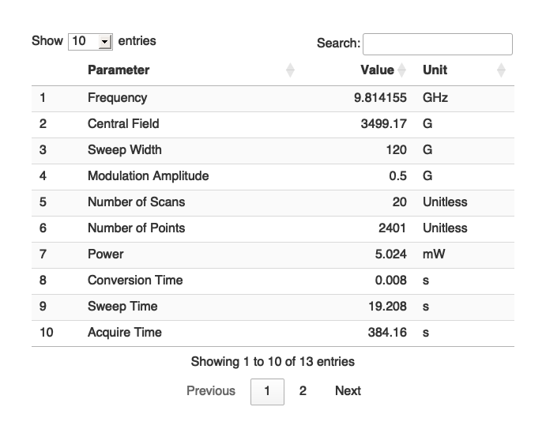
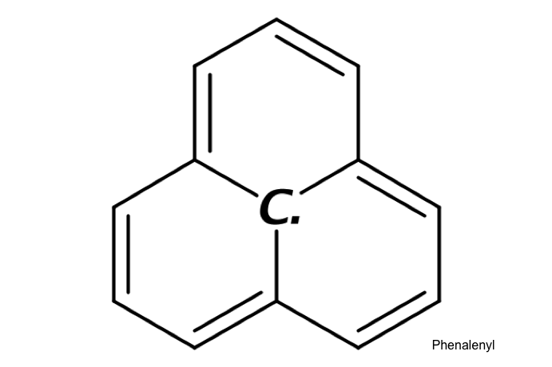
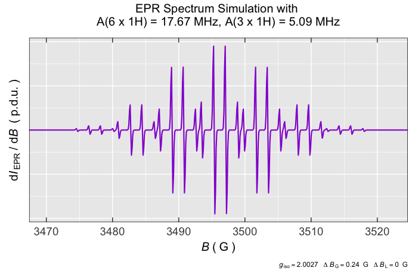
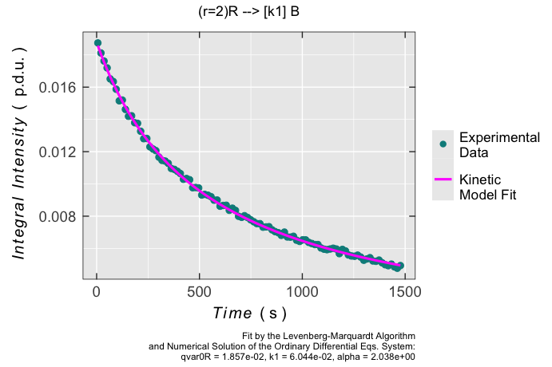

Overview 
The key objective of this open source  package is to bring handy functions corresponding to “everyday” data processing/analysis in the EPR (Electron Paramagnetic Resonance) spectroscopy mainly in chemistry. Similar
package is to bring handy functions corresponding to “everyday” data processing/analysis in the EPR (Electron Paramagnetic Resonance) spectroscopy mainly in chemistry. Similar  tools like cwepr and the related projetcs have been developed, so far. The eprscope, as the first complex
tools like cwepr and the related projetcs have been developed, so far. The eprscope, as the first complex  package üì¶ for EPR, doesn‚Äôt want to replace the latter nor the excellent and standard EPR simulation/processing EasySpin Toolbox for MATLAB and its additional frameworks like SpecProFi or CW EPR Scripts by Emilien Etienne. Rather, it may be considered like a complementary üì¶ or toolbox with practical functions which have to be otherwise performed by several proprietary tools. For instance, like acquisition/processing software, supplied by the EPR spectrometer manufacturers (see e.g.¬†Xenon/WinEPR) as well as several other software platforms like the MS Office and/or Orgin/SigmaPlot/Igor which are often applied in the EPR processing/analysis workflow. Therefore, the eprscope tries to reduce such many steps/programs if the above-mentioned software combination would be adopted. In order to achieve the goal it uses superior power of the open source
package üì¶ for EPR, doesn‚Äôt want to replace the latter nor the excellent and standard EPR simulation/processing EasySpin Toolbox for MATLAB and its additional frameworks like SpecProFi or CW EPR Scripts by Emilien Etienne. Rather, it may be considered like a complementary üì¶ or toolbox with practical functions which have to be otherwise performed by several proprietary tools. For instance, like acquisition/processing software, supplied by the EPR spectrometer manufacturers (see e.g.¬†Xenon/WinEPR) as well as several other software platforms like the MS Office and/or Orgin/SigmaPlot/Igor which are often applied in the EPR processing/analysis workflow. Therefore, the eprscope tries to reduce such many steps/programs if the above-mentioned software combination would be adopted. In order to achieve the goal it uses superior power of the open source  ecosystem that combines data processing, analysis and great scientific visualizations together with the extensive publishing capabilities by Rmarkdown and Quarto. Everything at one place (see the RStudio IDE) without the need to switch between or employ any other additional software.
ecosystem that combines data processing, analysis and great scientific visualizations together with the extensive publishing capabilities by Rmarkdown and Quarto. Everything at one place (see the RStudio IDE) without the need to switch between or employ any other additional software.
Installation
Before the installation, please make sure that you have already followed instructions for the {nloptr} package installation depending on your operating system. This package is required for the proper running of the eprscope optimization/fitting functions.
# package can be installed by =>
if (!require(devtools)) {install.packages("devtools")}
devtools::install_github("jatanRT/eprscope")
# alternatively, install package together with vignettes/articles:
# if (!require(devtools)) {install.packages("devtools")}
# devtools::install_github("jatanRT/eprscope",build_vignettes = TRUE)Completely new  users or people who haven’t already installed the R environment, please consult the following steps prior to own eprscope installation ➨
users or people who haven’t already installed the R environment, please consult the following steps prior to own eprscope installation ➨
installation of the Rstudio IDE (alternatively, you may try its cloud version without the need for
 installation)
installation)the latest R tools release ONLY for WINDOWS OS
Additionally, the open-source scientific and technical publishing system Quarto together with the Pandoc, a document converter system, may be required for sharing the results coming from eprscope in desired formats like pdf , html , docx , pptx or tex (details may be found in the create_qmdReport_proj() documentation).
Usage
In this section, couple of examples are shown in order to briefly demonstrate the package functionality. More detailed description can be found within the articles/vignettes or documentation examples.
Reading Files with Instrumental Parameters
# loading the package/library
library(eprscope)
#
# loading the built-in example file => "TMPD_specelchem_accu_b.par"
tmpd.params.file <-
load_data_example(file = "TMPD_specelchem_accu_b.par")
#
# parameters into interactive table (data frame)
tmpd.params.dt <-
readEPR_params_tabs(
path_to_dsc_par = tmpd.params.file,
origin = "winepr",
interact = "params"
)
#
# table preview
tmpd.params.dt
Depict Molecular Structures
# Pphenalenyl (Perinaphthenyl or PNT) radical by `SMILES` code:
# "C1([C.]23)=CC=CC2=CC=CC3=CC=C1"
draw_molecule_by_rcdk(
molecule = "C1([C.]23)=CC=CC2=CC=CC3=CC=C1",
mol.label = "Phenalenyl",
mol.label.color = "black",
mol.label.xy.posit = c(8.8, 1.2)
)
Simulation of Isotropic EPR Spectra
# simulation of the phenalenyl (perinaphthenyl or PNT) radical,
# see also https://pubs.rsc.org/en/content/articlelanding/2006/CS/b500509b,
# the additional experimental/instrumental parameters are not shown,
# they posses their default values => see the corresponding documentation
# of `eval_sim_EPR_iso()` function.
simulation.iso <-
eval_sim_EPR_iso(
g.iso = 2.0027,
B.unit = "G",
nuclear.system = list(
list("1H", 3, 5.09), # 3 x A(1H) = 5.09 MHz
list("1H", 6, 17.67) # 6 x A(1H) = 17.67 MHz
),
lineGL.DeltaB = list(0.24, NULL) # linewidth in G
)
#
# simulation spectrum preview in the region from 3470 G to 3522 G
simulation.iso$plot +
ggplot2::coord_cartesian(xlim = c(3470, 3522))
Radical Kinetic Model Fitted onto the Experimental Data
# decay of a triarylamine radical cation right after
# its generation by electrochemical potentiostatic oxidation
# in TBAPF6/CH3CN, double integrals (Areas) vs time were
# obtained by data pre-processing within the continuous
# wave (CW) EPR spectrometer acquisition/processing software.
#
# loading the built-in example file with instrumental parameters
triarylamine_rc_decay_dsc <-
load_data_example(file = "Triarylamine_radCat_decay_a.DSC")
#
# loading the built-in example file with "Area" vs "time" data frame
triarylamine_rc_decay_txt <-
load_data_example(file = "Triarylamine_radCat_decay_a.txt")
triarylamine_rc_decay_data <-
readEPR_Exp_Specs(
path_to_ASC = triarylamine_rc_decay_txt,
header = TRUE,
fill = TRUE,
select = c(3, 7),
col.names = c("time_s", "Area"),
x.unit = "s",
x.id = 1,
Intensity.id = 2,
qValue = 1700,
data.structure = "others"
) %>% na.omit()
#
# fitting the experimental decay by 2R --> B kinetic model
# with "k1" rate constant and the corresponding partial
# rection order "alpha". "qvar0R" refers to initial
# "quantitative variable" (such as concentration, double integral
# or number of radicals) of the triarylamine radical cation "R".
triarylamine_rc_decay_model <-
eval_kinR_EPR_modelFit(
data.qt.expr = triarylamine_rc_decay_data,
model.react = "(r=2)R --> [k1] B",
elementary.react = FALSE,
params.guess = c(
qvar0R = 0.019,
k1 = 0.04,
alpha = 1.9
),
time.correct = TRUE,
path_to_dsc_par = triarylamine_rc_decay_dsc,
origin = "xenon"
)
#
# graph preview
triarylamine_rc_decay_model$plot
#
# data frame/table of the obtained kinetic parameters
# by the non-linear fit and numeric solution
# of the Ordinary Differential Equations
triarylamine_rc_decay_model$df.coeffs
#> Estimate Std. Error t value Pr(>|t|)
#> qvar0R 0.01857004 0.0000572031 324.63342 4.380657e-149
#> k1 0.06043803 0.0054514524 11.08659 6.161251e-19
#> alpha 2.03820600 0.0196761800 103.58748 3.921209e-101Help, Questions and Contribution
There are several ways how to get help. If the users are already familiar with the R statistical language please, follow either the individual package function documentation or the corresponding articles/vignettes. These might be also considered as a kind of EPR spectroscopy and  knowledge resources, particularly for students. In case you are completely new to R, there are couple of great tutorials enabling a quite straightforward diving into
knowledge resources, particularly for students. In case you are completely new to R, there are couple of great tutorials enabling a quite straightforward diving into  . Please, refer to e.g.
. Please, refer to e.g.
Reproducible Research in R and Guides for the R-Cubed Courses
Quarto - An Open Source Scientific and Technical Publishing System
-
YouTube Video Tutorials ➨
Even though the EPR spectroscopy is a quite complex field there are some introductory on-line materials which may help to start with this special magnetic resonance method ➨
Any additional questions, comments, remarks or issues can be addressed through several discussion channels like üìß e-mail jantar40@protonmail.com or github  issues on the github source page (see the contributing guide). In the future, there will be also a specialized Discord community channel to discuss the eprscope related topics. If somebody is able and interested in the package development, please refer to contributing guide.
issues on the github source page (see the contributing guide). In the future, there will be also a specialized Discord community channel to discuss the eprscope related topics. If somebody is able and interested in the package development, please refer to contributing guide.
Acknowledgements
I would like to express a deep gratitude to my colleagues from the NMR Spectroscopy Group of the Institute of Organic Chemistry and Biochemistry especially, Dr. Radek Pohl  , Dr. Ondřej Socha
, Dr. Ondřej Socha  and Dr. Martin Dračínský
and Dr. Martin Dračínský  . Without the fruitful environment within the NMR Spectroscopy team it wouldn’t be possible to develop such a project like this. Also, I’d like to give a special thanks to my brother Dr. Peter Tarábek
. Without the fruitful environment within the NMR Spectroscopy team it wouldn’t be possible to develop such a project like this. Also, I’d like to give a special thanks to my brother Dr. Peter Tarábek  for his valuable comments and remarks.
for his valuable comments and remarks.